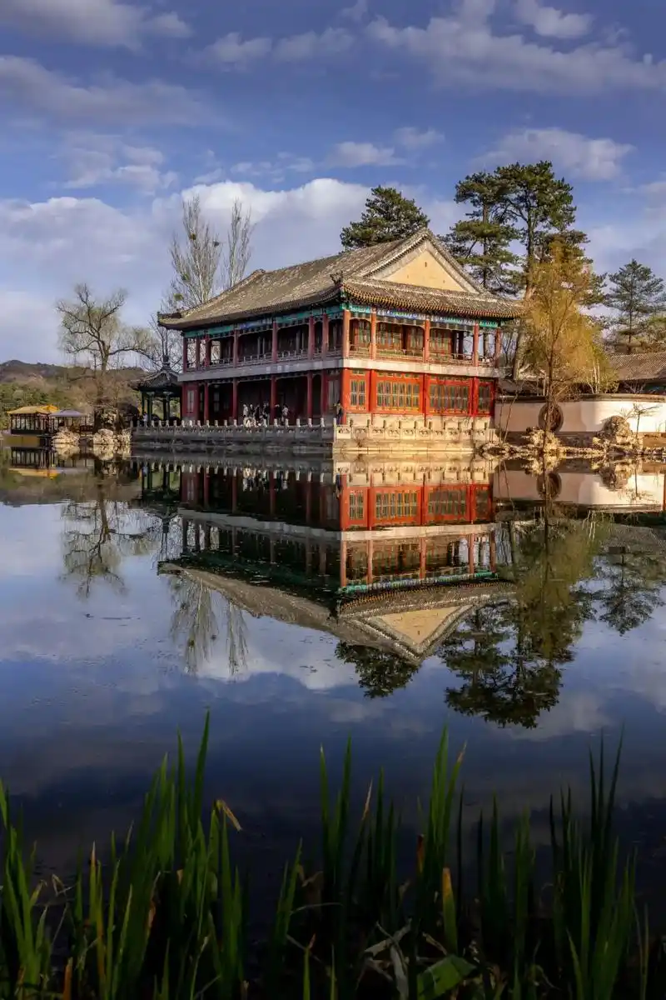
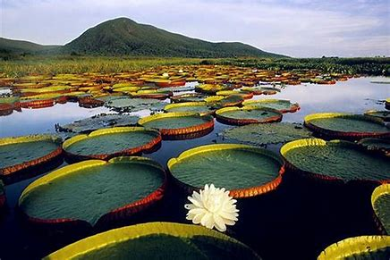
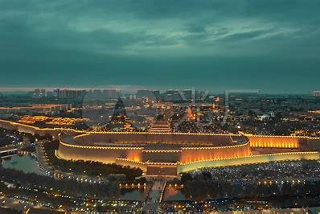

中国三大古建筑群之一、四大名园之一，是塞外的清朝皇家园林， 有康熙以四字组成的36景和乾隆以三字组成的36景等建筑，融合了南北建筑艺术之精华 。

位于河北省保定市安新县，是河北省第一大内陆湖， 有众多淀泊、沟濠、小岛等，以其物产丰富、风景秀丽被誉为“北国江南”。

位于河北省秦皇岛市北戴河区，是国家风景名胜区和国家湿地公园， 拥有冬暖夏凉的海洋性气候，有广阔的海滨浴场及诸多风景名胜 。
正定古城有1600多年建城史。 它曾是北方政治、经济、军事、文化中心，与保定、北京并称为“北方三雄镇”.。
